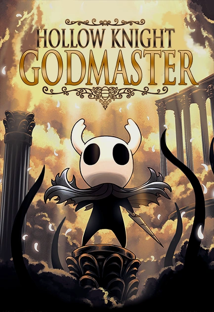

.webp)
Buscador de Dioses

| Jefes | ||||||
|---|---|---|---|---|---|---|
| Hermanos Oro y Mato | Maestro de Pintura Sheo | Gran Sabio del Aguijón Sly | Vasija Pura | Absoluto Destello | Nosk alado | Hermanas de Batalla |
| Mecánicas | ||||
|---|---|---|---|---|
| Panteones | ||||
| Panteón del Maestro | Panteón del Artista | Panteón del Sabio | Panteón del Caballero | Panteón de Hallownest |
| Objetos | |
|---|---|
| Afinador de Dioses | Nueva variante de la Flor delicada |
Sinopsis
Cuarto y último de los paquetes de contenido gratuitos para Hollow Knight. Fue anunciado el 31 de Enero del 2018 y publicado el 23 de Agosto del mismo año. Para abrir el sarcófago que contiene la entrada al Hogar de Dioses se necesita una Llave simple. Una nueva llave ha sido añadida con este DLC en el Coliseo de los Insensatos, tras un falso muro en zona este del recinto. Tras conseguir la llave simple, el jugador deberá ir en busca de la nueva zona añadida en Canales Reales llamada Pila de Basura que se accede a través de un muro destructible justo encima de la arena de la Tremarmita. Una vez en la Pila de Basura, sólo hará falta abrir el sarcófago para liberar al Buscador de Dioses, coger el Afinador de Dioses y usar el Aguijón Onírico sobre el NPC.
Hermanos Oro y Mato
Los Hermanos Maestros del Aguijón Oro y Mato son un jefe dual de misión en Hollow Knight que aparecen en el DLC Buscador de Dioses. Se encuentran en la cima del Panteón del Maestro en Hogar de Dioses.
Maestro de Pinturas Sheo
El Maestro de Pintura Sheo es un Jefe de misión. Se encuentra en la cima del Panteón del Artista en el Hogar de Dioses, y como su propio nombre indica utiliza las habilidades combinadas de un pintor con las del aguijón.
Gran Sabio del Aguijón Sly
Sly te espera en la Cima del Panteón del Sabio en el Hogar de Dioses. Este personaje que en un principio se nos presenta como un comerciante, más adelante en el juego se nos revela que en su día fue el maestro de Oro, Mato y Sheo.
Vasija Pura
Es la versión principal u original del Hollow Knight, la no afectada por la Infección. Penúltimo jefe del 5to panteón y jefe final del 4to panteón del Caballero.
Absoluto Destello
Absoluto Destello es la Jefa final de Buscador de Dioses en Hollow Knight. Es la forma perfecta del Destello y espera en la cúspide del Panteón de Hallownest.
Nosk alado
Es la versión voladora de Nosk que asume la forma de Hornet en lugar de la del Caballero.
Hermanas de Batalla
Variante de los Señores Mantis que se encuentra únicamente en el Hogar de Dioses (Panteón de Hallownest). La batalla comienza igual pero tras derrotar a la primera mantis, ésta volverá a la batalla en lugar de sentarse en su trono.